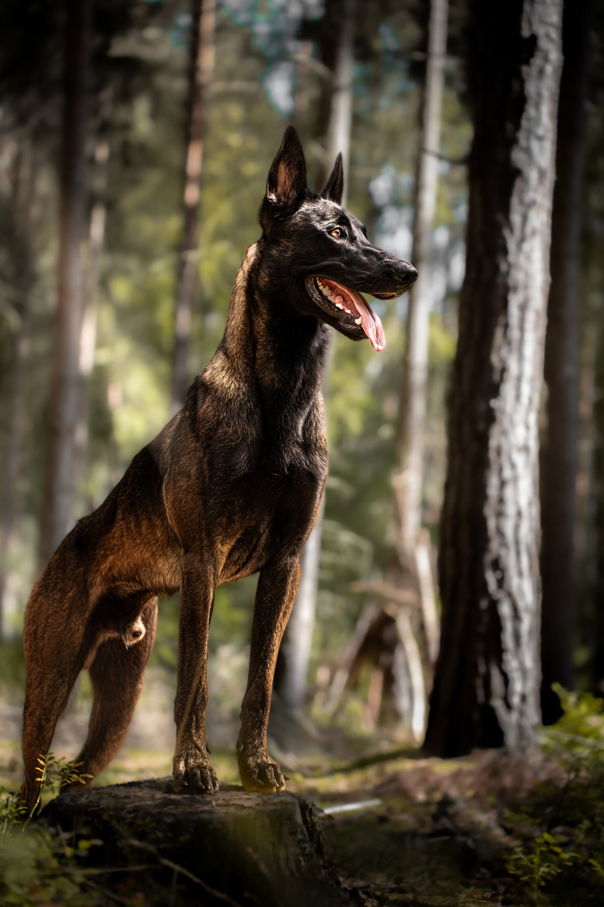
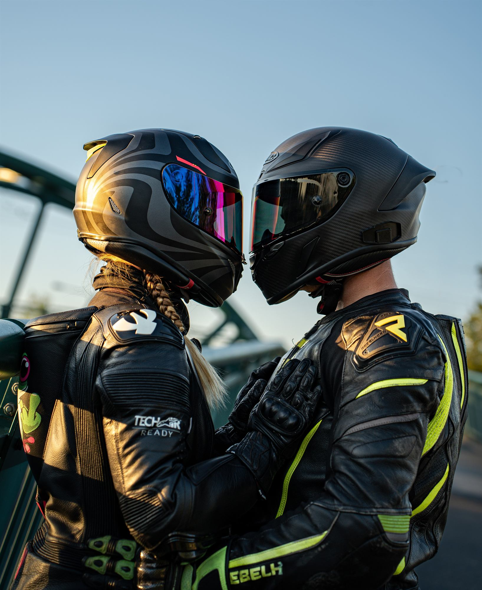
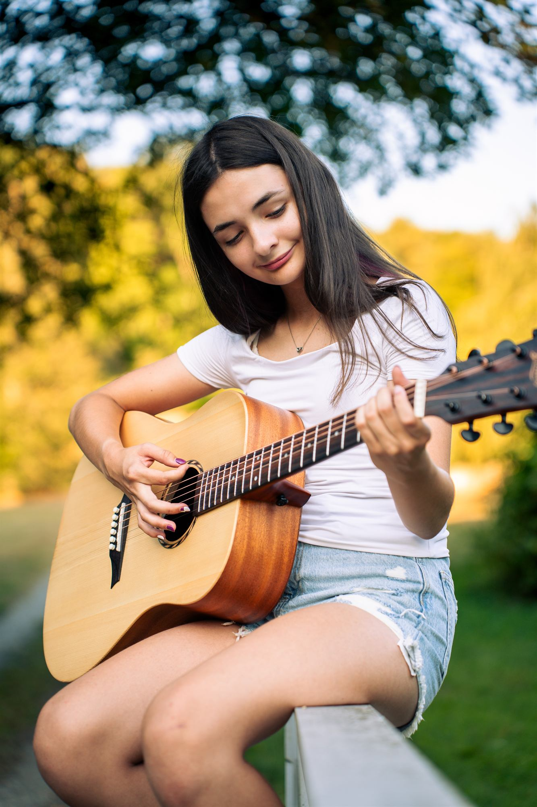
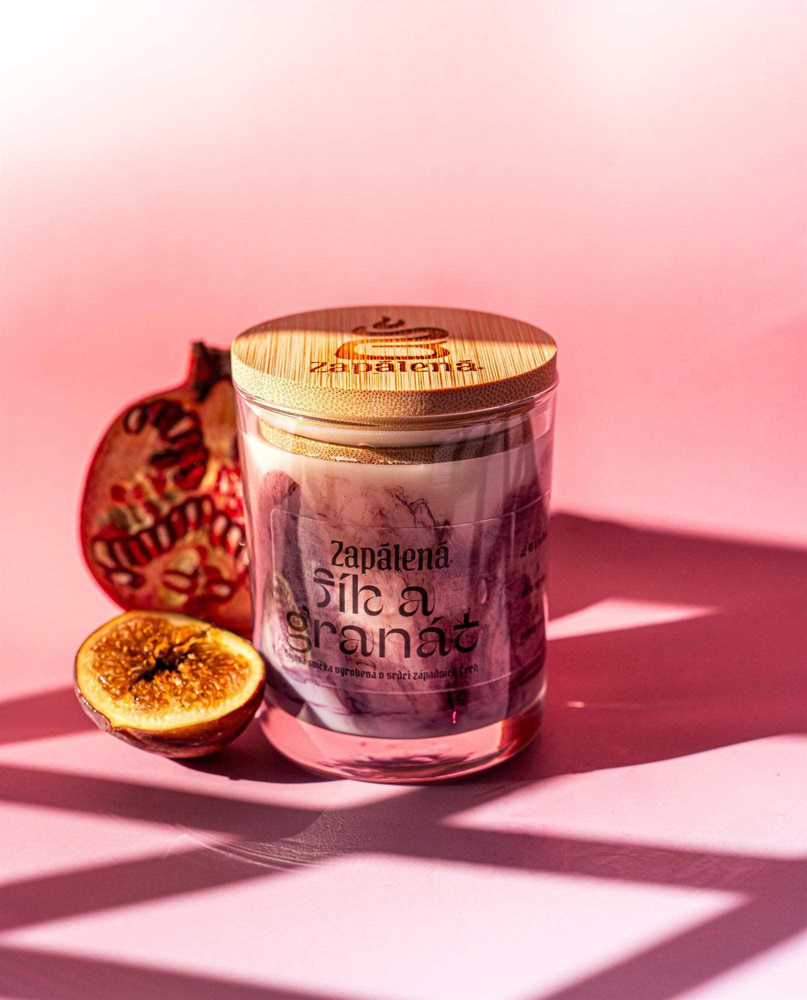

Komunikace
Domluvíme se na průběhu focení, přibližném termínu a místě. Společně doladíme styl, oblečení i vhodnou lokalitu.




Zvířata • Auta • Páry • Portréty
Jak focení probíhá ↓Fotografka z Plzně zaměřená na focení psů, portrétní focení, párové focení, focení aut a focení motorek v Plzni a okolí.
Poukaz připravím na vybraný balíček nebo částku. Hodí se pro páry, portréty, mazlíčky i focení auta nebo motorky.
Nemusíte umět pózovat ani mít všechno dokonale připravené. Focení vedu v klidu, s lehkým navedením a prostorem pro přirozené momenty.
Domluvíme se na průběhu focení, přibližném termínu a místě. Společně doladíme styl, oblečení i vhodnou lokalitu.
Na focení vás průběžně navedu, ale nechávám prostor přirozenosti. U dětí a zvířat počítám s pauzami, pohybem i občasnou špatnou náladou.
Po focení připravím náhledovou galerii. Vyberete si snímky, které se vám líbí nejvíc, a ty pak dostanou finální úpravu.
Hotové fotografie předám elektronicky přes online galerii nebo odkaz ke stažení, připravené ke sdílení i uchování.